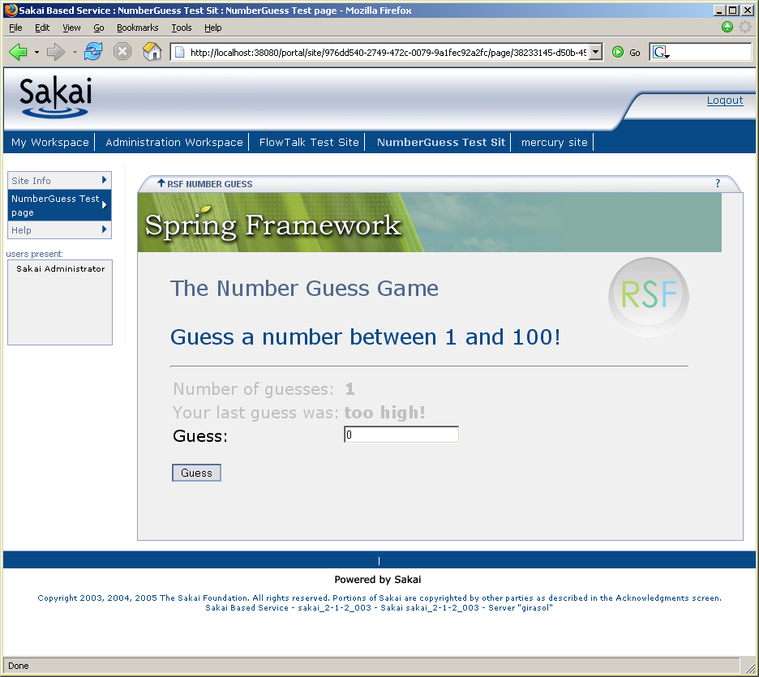
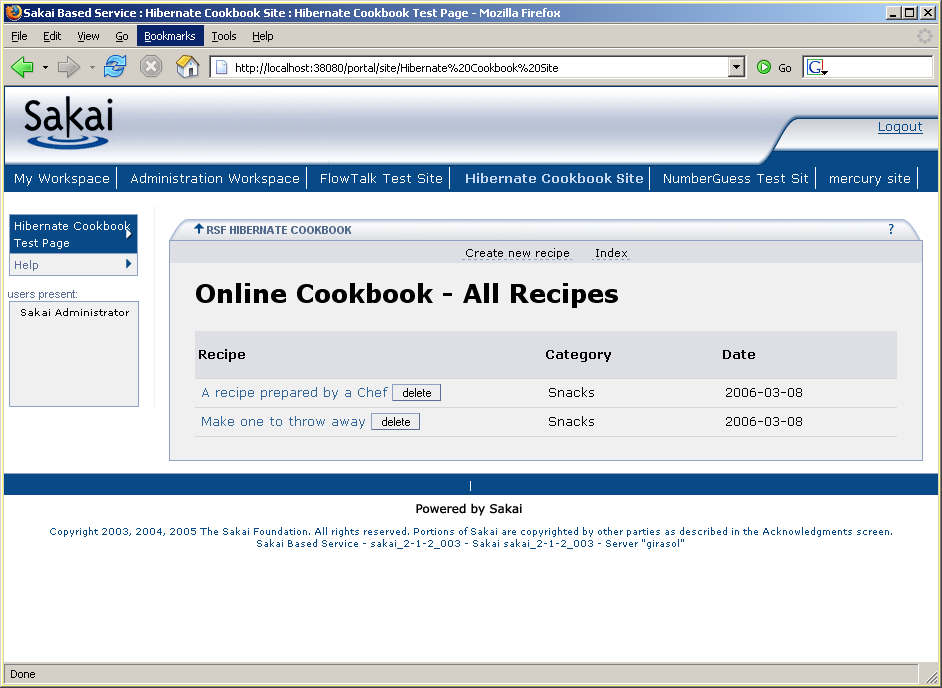
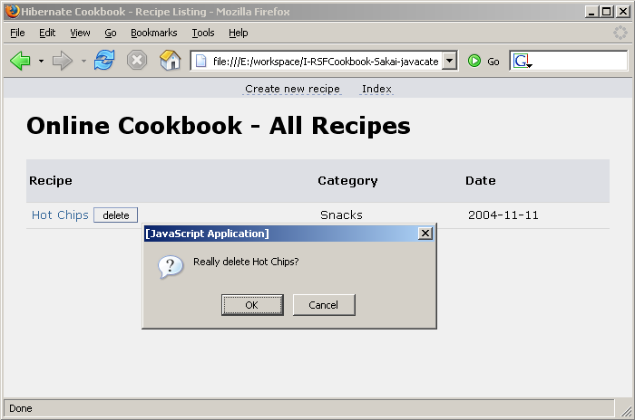

http://www.sakaiproject.org/images/stories/conferenceLogos/logoslate160x89.jpg The Sakai project is a "Collaboration and Learning Environment" for higher education, that is, an open source Java software framework operating an institutional portal. Sakai defines its own dispatch mechanism operating within a (mostly) standard webapp container to tools which are provided packaged as Servlets together with a suitable manifest.
The Sakai project is a "Collaboration and Learning Environment" for higher education, that is, an open source Java software framework operating an institutional portal. Sakai defines its own dispatch mechanism operating within a (mostly) standard webapp container to tools which are provided packaged as Servlets together with a suitable manifest.
{kind=link}
SakaiRSF is the integration library to be used by Sakai tools. SakaiRSF is held in this github project[1] and consists of the handful of beans (in the standard requestScope/applicationScope split) needed to abstract over the request dispatch cycle. The library also defines a suitable TokenStateHolder, InSakaiSessionTSH, which guides RSF to store any "conversational" request state (i.e. flow state) in the appopriate Sakai ToolSession rather than the HttpSession.
From here, Sakai integration is just a matter of supplying appropriately styled view templates.
web.xml for Sakai-RSF tools#
The correct paths and configuration files must be set up in web.xml, of which you can see a sample in SVN, here for the CRUDplus OTP sample. The most important section sets up the configuration for Spring and RSAC, which is in a stack of 5 contexts, one for each technology in use:
| <param-value> | |
| classpath:conf/rsf-config.xml, | The core RSF Spring configuration |
| classpath:conf/blank-applicationContext.xml, | The "blank" RSF Spring configuration, containing typically overridable implementations |
| classpath:conf/hibernate-applicationContext.xml, | The configuration required for Hibernate integration |
| classpath:conf/sakai-applicationContext.xml, | Configuration for SakaiRSF |
| /WEB-INF/applicationContext.xml | The webapp's own configuration |
| </param-value> |
Since these files form a single Spring context, and they override beans in order from the base, it is critical that they are listed in this order. The same goes for the request-scope configuration files assigned to requestContextConfigLocation.
In current versions of SakaiRSF the filter mapping for the Sakai request filter may not be changed from /faces/*, although this configuration is generally irrelevant to end users in any case since tool URLs are theoretically private to the portal.
<filter-mapping>
<filter-name>sakai.request</filter-name>
<url-pattern>/faces/*</url-pattern>
The current version of SakaiRSF references RSF 0.7 and Sakai "2.2.x" which is a generic term referring to any version of Sakai from 2.2.0 onwards. To work with prior versions of Sakai such as 2.1.0 you will need to use corresponding older versions of RSF (0.6.3).
Samples#
The two major samples, NumberGuessing and HibernateCookbook have been ported over to Sakai to demonstrate the same Java code running untouched in a quite different environment, with the appropriate restyling achieved through previewable HTML templates.Also has been ported the "TaskList" sample (originally in JSF) from the Sakai Programmers' Cafe held at Vancouver in May 2006 -
The original JSF version from which it was taken is in Sakai contrib SVN at https://source.sakaiproject.org/contrib/programmerscafe/trunk/tasklist/. This is described on its own page here at SakaiRSFTaskList.
NumberGuessing#
Here is a screenshot of the NumberGuessing sample running in Sakai. In the SVN project. This uses the standard Maven Sakai plugin - simply check out this project (which will also check out the "base" project containing the app definition from the standalone NumberGuessing app) and run "maven sakai".
|  |
Hibernate Cookbook#
The version of the Hibernate Cookbook sample is slightly more complex, and it was decided simply to fork the code into two completely new projects, one called RSFCookbook-category-datamodel holding only the Hibernate auto-generated data model for the app, and the other holding the (original Java, but repackaged) code in RSFCookbook-sakai-javacategory. This is necessary because of the different deployment fates of the tool code and datamodel code - in a Hibernate Sakai application, the data model must be visible to the Hibernate library operating across the entire Sakai installation, and hence must be copied to the shared Classloader level in the Tomcat instance. The webapp itself is sent to the normal location. In a production application, you would most likely create 3 (or more) projects, for the data model, application code, and webapp packaging separately. This project uses the standard maven sakai build invoked on the main webapp.
Here is the cookbook app running in Sakai. All controls have been rearranged in accordance with Sakai UI guidelines and styling - you may want to compare this shot with the same app running standalone (the view there is actually of an earlier version of the app).
|  |
Previewing#
One great merit of the RSF approach is how easy it is to develop the UI with full previewability using standard tools. With Sakai there is a slight nuisance that the referenced stylesheets and Javascript files are not present in the same webapp, and in addition are referenced using "absolute" server-relative URLs of the form <link href="/library/skin/tool_base.css" which makes it virtually impossible to put them in the local filesystem at a place they could be resolved from the template. I have written a few tiny scripts that get over this problem by performing a global search-and-replace on Sakai template references, and make it easy to develop the UI directly in the filesystem seeing how the pages will actually be rendered live.UNIX hackers will be able to adapt these in a superior way, but bundled with this app in the bats directory are helpers for lowly Windows users. The base utilities are lines of the form
find . -name "*.html" | xargs sed -i -e 's/href="\/library/href="%1/'which require the excellent Cygwin
libraries to be installed on your machine - consult postings by Ray Davis on sakai-dev (early March 2006) for more information on the benefits.
While you are developing your templates, issue
makeabslto replace references with relative versions, and before you issue the build using maven sakai, run makerell to convert the stylesheet references back into the global-slash versions. Edit the paths in makerell.bat and makeabsl.bat to suit your system.
Here is a screenshot of the template for the above view being previewed from the filesystem, together with its functional Javascript box! This is what we call, "Ruby in the Dust" :P
|  |
Future#
Note that there are stub factory methods to deliver request-scope instances of typical Sakai entities such as Site, SitePage, User etc. which enable proper request-scope programming in the RSF style, rather than having express a dependence in your code on HttpServletRequest attributes, and/or passing these objects around by yourself. These will be extended to a fuller set as RSF Sakai development continues, but in the meantime it is quite easy to write these definitions yourself - consult SakaiRequestParser
and sakai-requestContext.xml for examples.
Believe me, this is amazingly easy compared to other approaches you may be used to :P
A similar JSR-168 library for use in other portals such as uPortal is now also available.
[#1] Note that when checking out this source, you will save time if you adhere to the RSF convention of checking out libraries into the workspace prefixed by J (e.g. J-RSFSakai), so that interproject references remain correct. This will happen automatically if you check out using one of the "bundles" holding SVN externals, in saffron SVN at https://saffron.caret.cam.ac.uk/svn/bundles/
.
Add new attachment
List of attachments
| Kind | Attachment Name | Size | Version | Date Modified | Author | Change note |
|---|---|---|---|---|---|---|
png |
sakai-cookbook-template.png | 21.2 kB | 1 | 19-Jul-2006 09:36 | AntranigBasman | |
png |
sakai-cookbook.png | 52.0 kB | 1 | 19-Jul-2006 09:36 | AntranigBasman | |
png |
sakai-numberguess-2.png | 122.4 kB | 1 | 19-Jul-2006 09:36 | AntranigBasman |
{kind=link}
{kind=link}
{kind=link}
{kind=link}
{kind=link}
{kind=link}
Documentation
Developers
Javadocs
Designers
Sample RSF Apps
Presentations
Acronyms
Downloads
Current Release
Trunk
Distributions
Old Versions
Community
Q&A
Forums
Mailing Lists
Issue Tracker
People
Design
Roadmap
Integrations
Concepts
Philosophy